Kako instalirati eSIM
Dodavanje eSIM-a na iPhone-u
Zahtjevi
Prije nego što počnete, provjerite da imate:
- iPhone koji podržava eSIM (iPhone XS, iPhone XS Max, iPhone XR ili noviji).
- iOS 12.1 ili noviji.
- QR kod ili detalje koje je pružio vaš operater.
Korak 1: Ažurirajte iOS
-
Provjerite je li vaš iPhone pokrenut na najnovijoj verziji iOS-a.
-
Idite na Postavke > Općenito > Ažuriranje softvera.
- Ako je dostupno ažuriranje, dodirnite Preuzmi i instaliraj.

Korak 2: Skenirajte QR kod
- Idite na Postavke > Mobilna veza.

- Dodirnite Dodaj eSIM.

-
Koristite svoj iPhone za skeniranje QR koda koji je pružio vaš operater.
-
Ako se zatraži unos potvrde za aktivaciju eSIM-a, unesite broj koji je pružio vaš operater.

Korak 3: Ručni unos detalja (ako nemate QR kod)
- Ako nemate QR kod, možete ručno unijeti informacije o eSIM-u:
- Idite na Postavke > Mobilna veza.
- Dodirnite Dodaj eSIM.
- Dodirnite Ručni unos detalja na dnu zaslona.

- Unesite potrebne informacije koje je pružio vaš operater.
Korak 4: Označite svoje planove
- Nakon što je vaša eSIM aktivirana, označite svoje planove radi lakše identifikacije:
- Idite na Postavke > Mobilna veza > Mobilni plan.
- Dodirnite broj koji želite promijeniti.

- Dodirnite Oznaka mobilnog plana i odaberite novu oznaku ili unesite prilagođenu oznaku.
Korak 5: Konfigurirajte postavke dvostrukog SIM-a
- Možete koristiti i primarnu i sekundarnu liniju za pozive i podatke:
- Idite na Postavke > Mobilna veza.

- Dodirnite Mobilni podaci i odaberite liniju koju želite koristiti za podatke.

Korak 9: Rješavanje problema
- Ako naiđete na bilo kakve probleme, provjerite podržava li vaš operater eSIM i je li vaš plan aktivan.
- Ponovno pokrenite iPhone nakon dodavanja eSIM-a.
- Kontaktirajte vašeg operatera za daljnju pomoć ako je potrebno.
Dodatne informacije
- eSIM može pohraniti više mobilnih planova, ali možete koristiti samo jedan plan istovremeno.
- Pazite da napravite sigurnosnu kopiju iPhonea prije nego što napravite bilo kakve značajne promjene.
Za više informacija, posjetite Apple podršku o postavljanju i korištenju dvostrukog SIM-a na vašem iPhoneu.
Dodavanje eSIM-a na Xiaomi
Zahtjevi
Prije nego što počnete, uvjerite se da imate:
- Xiaomi koji podržava eSIM (Xiaomi 12T Pro ili noviji).
- iOS 12.1 ili noviji.
- QR kod ili podatke koje vam je dostavio vaš eSIMFly.
Korak 1: Pronađite "Dodaj eSIM"
- Pritisnite Postavke.

- Pritisnite SIM kartice i mobilne mreže.

- Pritisnite indikator pored "Koristi eSIM".

- Pritisnite U redu.

- Pritisnite Upravljanje eSIM-om.

- Pritisnite Dodaj eSIM.

Korak 2: Skenirajte QR kod
- Postavite QR kod koji ste primili unutar okvira kamere na telefonu kako biste skenirali kod.

Korak 3: Aktivirajte eSIM
- Slijedite upute na ekranu kako biste dovršili aktivaciju eSIM-a.

Dodavanje eSIM-a na Samsung Galaxy S24
Zahtjevi
Prije nego što počnete, provjerite da imate:
- Samsung Galaxy koji podržava eSIM (Galaxy S24, Galaxy S24+, Galaxy S24 Ultra ili noviji).
- Android 12 ili noviji.
- QR kod ili detalje koje je pružio vaš operater.
Korak 1: Ažurirajte Android
-
Provjerite je li vaš Samsung Galaxy pokrenut na najnovijoj verziji Androida.
-
Idite na Postavke > Ažuriranje softvera.
- Ako je dostupno ažuriranje, dodirnite Preuzmi i instaliraj.
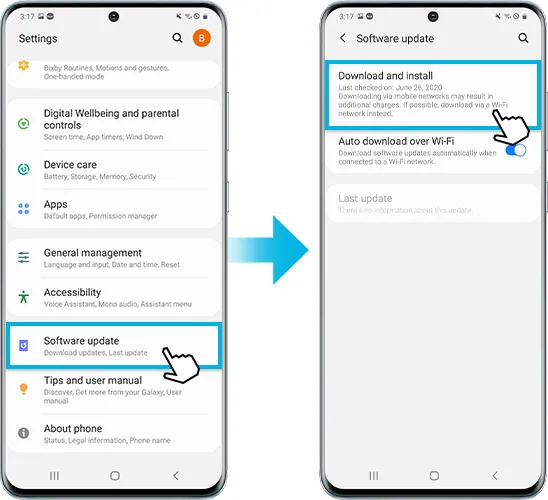
Korak 2: Skenirajte QR kod
- Idite na Postavke > Pritisnite Veze > Pritisnite SIM upravitelja.
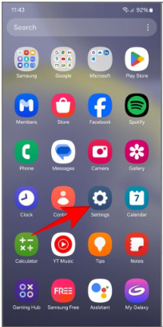 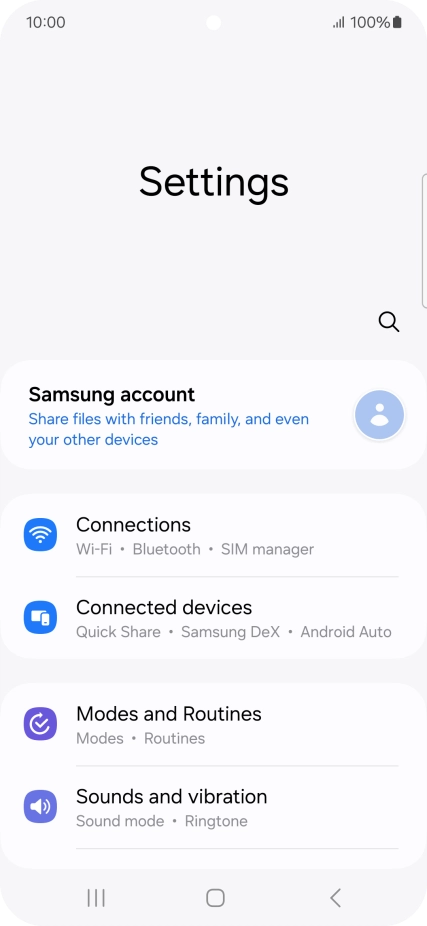 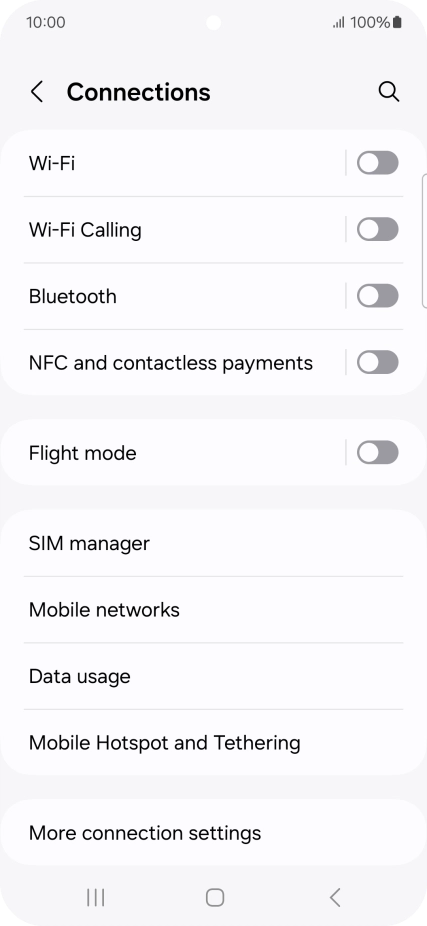
- Dodirnite Dodaj eSIM.
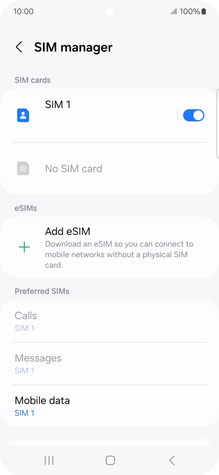
-
Koristite svoj Samsung Galaxy za skeniranje QR koda koji je pružio vaš operater.
-
Ako se zatraži unos potvrde za aktivaciju eSIM-a, unesite broj koji je pružio vaš operater.
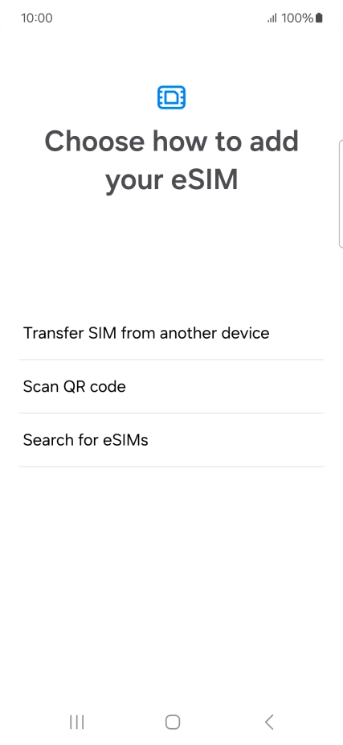 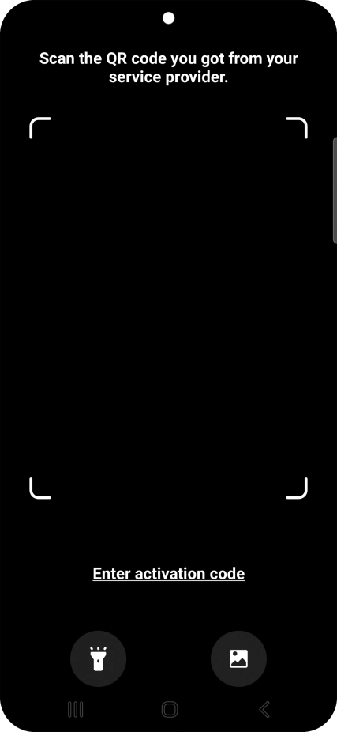
Korak 3: Ručni unos detalja (ako nemate QR kod)
- Ako nemate QR kod, možete ručno unijeti informacije o eSIM-u:
- Idite na Postavke > Veze> SIM upravitelj.
- Dodirnite Dodaj eSIM.
- Dodirnite Ručni unos detalja na dnu zaslona. 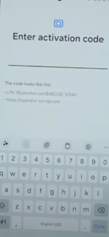
- Unesite potrebne informacije koje je pružio vaš operater.
-
Korak 4: Aktivirajte eSIM
- Povežite vaš telefon sa mrežom Vodafone UK.
- Idite na Dodaj. 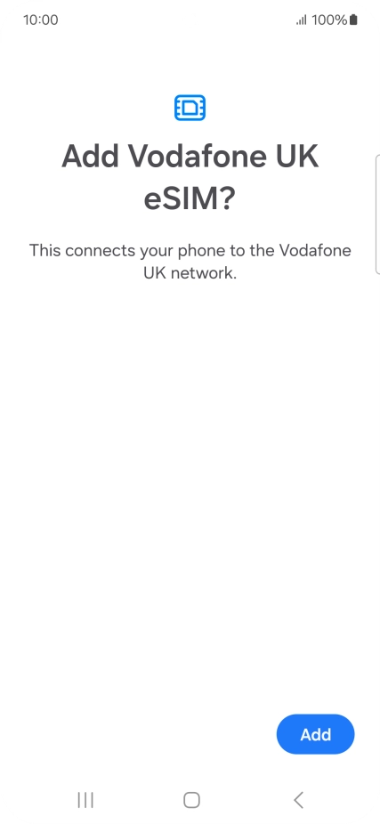
- Dodirnite SIM koji želite i nastavite Dalje. 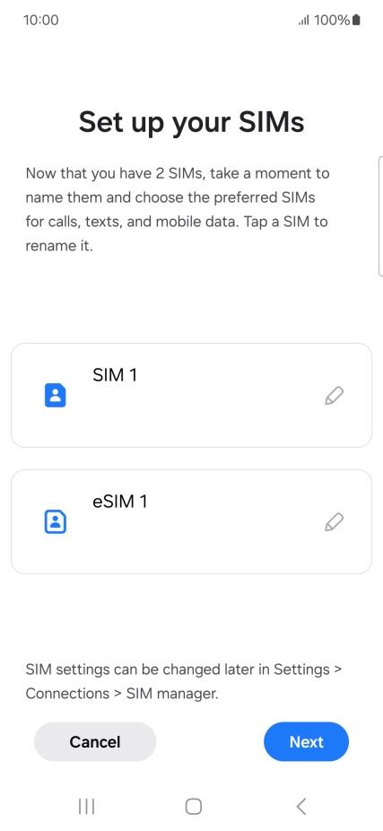 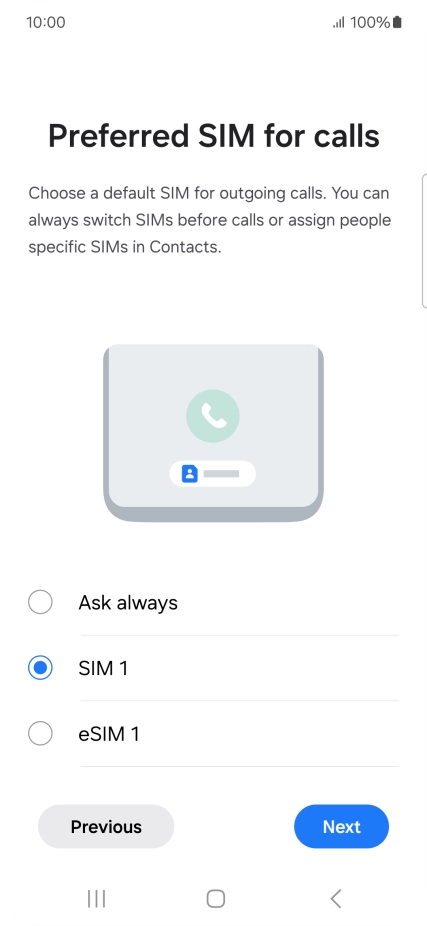 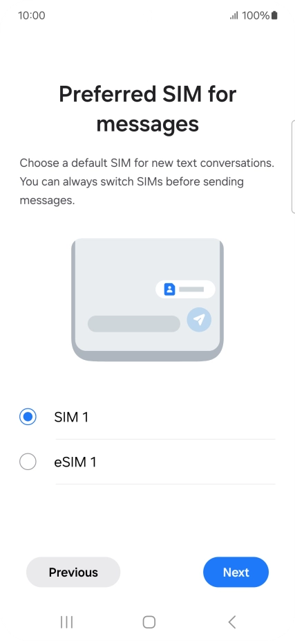
- Preferirani SIM za pozive, poruke, odaberite SIM i nastavite Dalje. 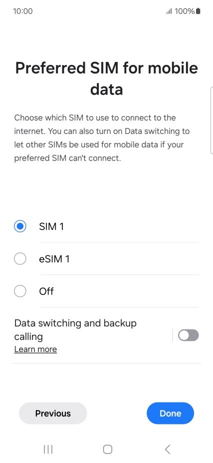
- Preferirani SIM za mobilne podatke, odaberite SIM i pritisnite Gotovo.
Korak 5: Konfigurirajte postavke dvostrukog SIM-a
- Možete koristiti i primarnu i sekundarnu liniju za pozive i podatke:
- Idite na Postavke > Veze > Mobilna mreža. 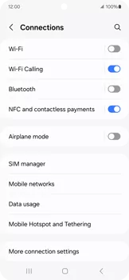
- Dodirnite Mobilni podaci (Podaci u roamingu) i odaberite liniju koju želite koristiti za podatke. 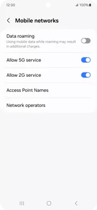
Korak 9: Rješavanje problema
- Ako naiđete na bilo kakve probleme, provjerite podržava li vaš operater eSIM i je li vaš plan aktivan.
- Ponovno pokrenite Samsung Galaxy nakon dodavanja eSIM-a.
- Kontaktirajte vašeg operatera za daljnju pomoć ako je potrebno.
Dodatne informacije
- eSIM može pohraniti više mobilnih planova, ali možete koristiti samo jedan plan istovremeno.
- Pazite da napravite sigurnosnu kopiju Samsung Galagy prije nego što napravite bilo kakve značajne promjene.
Za više informacija, posjetite Samsungovu stranicu za podršku o postavljanju i korištenju dvostrukog SIM-a na vašem Samsungu.